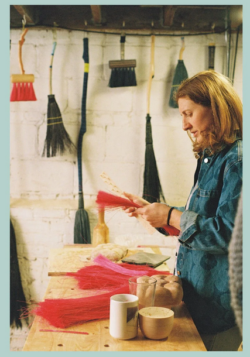

 Emma Rossoff Friday, May 15, 2026Comfort Station Logan Square2579 N Milwaukee Ave, Chicago, IL 60647 Opening Friday, May 15th, from 6PM - 9PM Official website Exhibition Opening: Emma Rossoff Friday, May 15, 2026 6:00 PM 9:00 PM ChicagoComfort Station Logan SquareEmma RossoffLogan Square More events on this date Original listing